Most people regard Denmark, and indeed all of Scandinavia as a mass-transit paradise. Busses run on time, trains arrive clean and tidy, and the people use mass transit and bikes instead of cars. What many do not know is that you cannot eat sausages on a bus, the metro breaks often, and the tax on automobiles and petrol is high enough (260% on cars) in an attempt to promote mass transit usage. All of the mass transit on this page is managed by the Danish State Railway. It is also important to note that the high tax on cars in Denmark, while a great source of revenue for the government, has succeeded in forcing people to keep cars longer. Cars are newer, safer, and more sylin' over in Sweden. But alcohol is hard to come by. Tradeoffs.
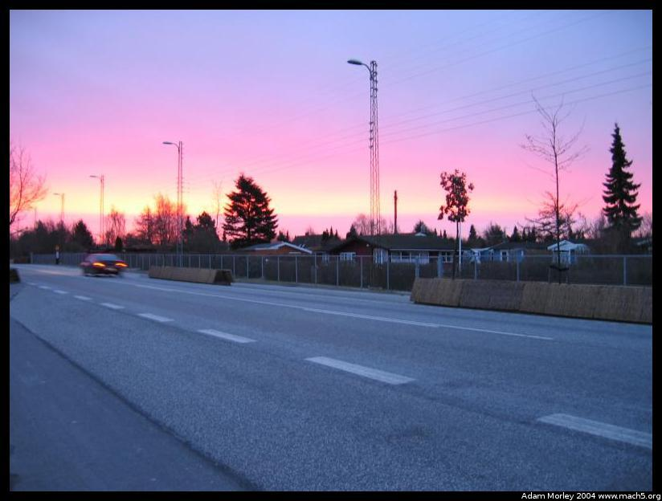
The red sun rises as I wait for my bus in the morning. Since significantly more than a critical mass uses mass transit, the wait times are short. During peak hours, express busses come every ten minutes, trains from Sweden every 20 and the metro ever four!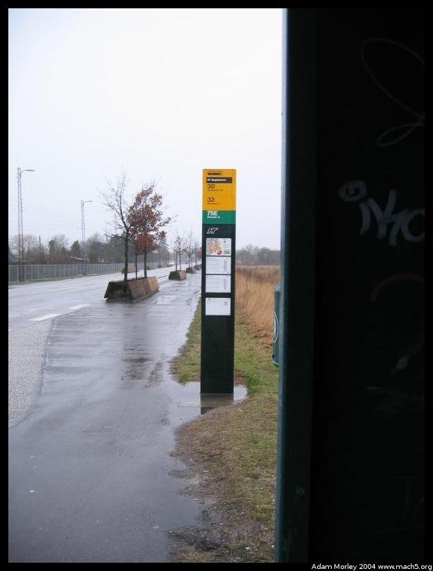
My bus stop. Three busses come here, along one of the main roads from København to Dragør. An express bus to the train/metro station, and then two local loop buses. The busses can, at times, be so on time they are early. Which means you are late purely for being on time, though this is rare. And then, sometimes, they are consistently four minutes late. For example, if I took bus 30 around nine o'clock, it would come exactly three minutes late everytime. Reliable tardiness is better than unreliable?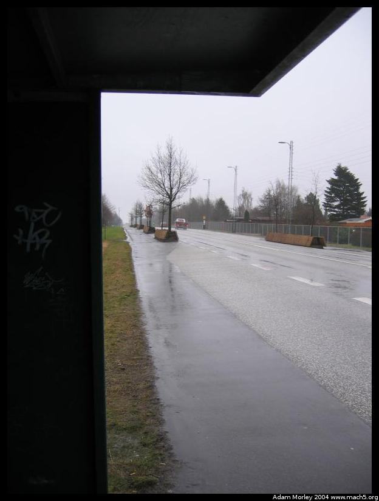
The other direction, towards Dragør. Notice the other bus stop.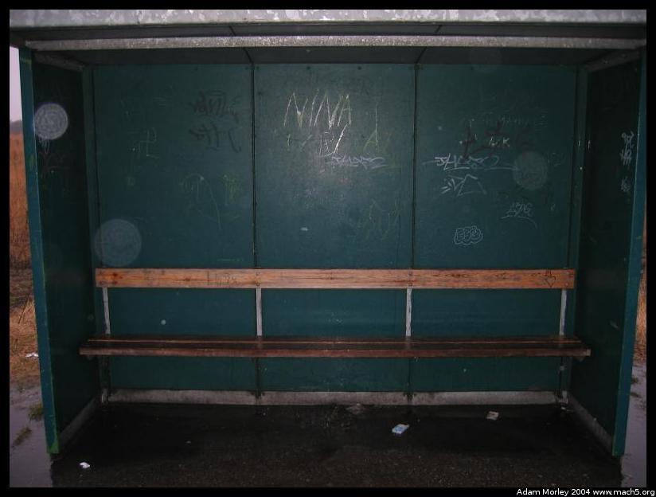
The waiting area. Convinently, its shielded on three sides for those cold windy days. Notice the graffiti. København has a graffiti problem.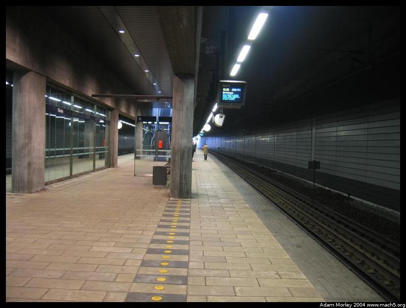
One of the train stations I use. This one is called Tårnby (pronounced "Tomboo" near as I can say). When I'm on time, I use the regional trains, which come from Sweden and go all over Denmark. When I'm late, I risk the metro. The tracks are multi use for the regional trains -- all kinds of trains travel on them.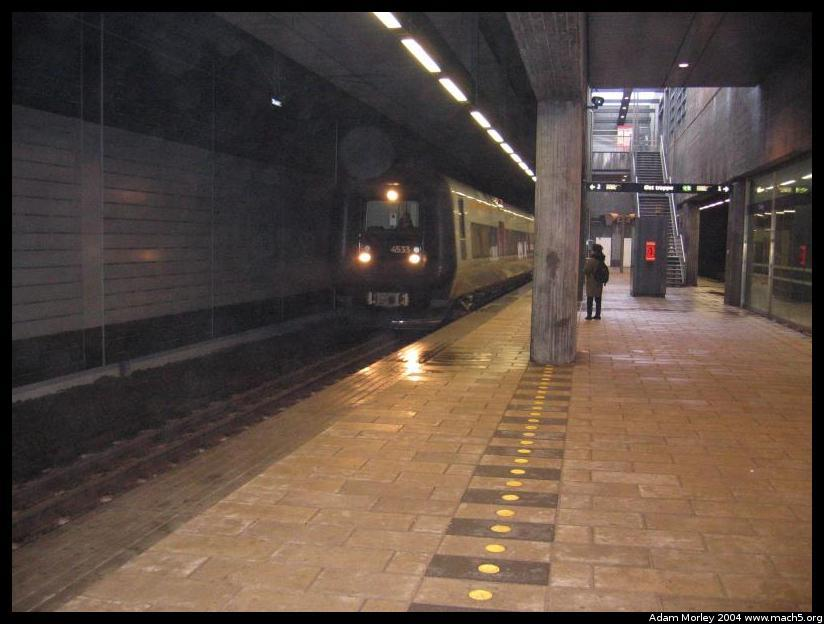
The train from Sweden (Malmö, the Swedes use the ö while the Danes use the ø) arrives to take me to school.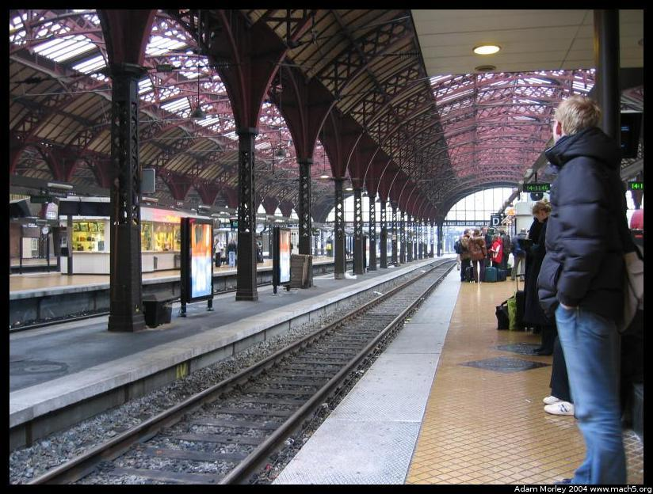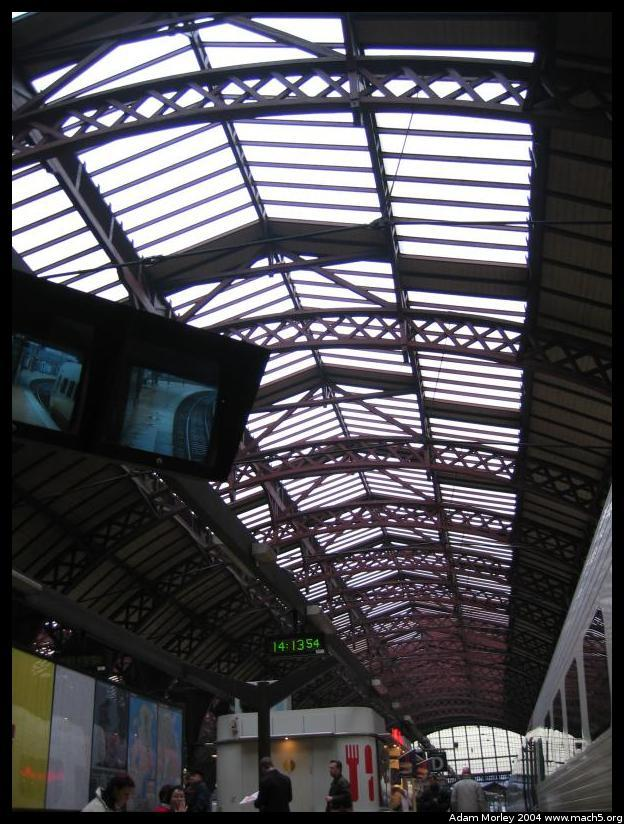
København Central Station, near the commuter trains. Plus the ceiling. The kiosk with the fork and the knife is a sausage cart -- these are all over the city. This one had more than just sausages, though.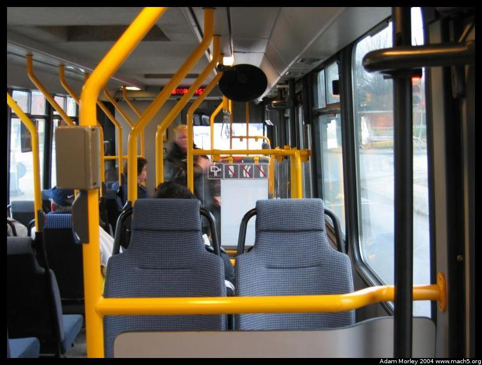
A picture from inside bus 30, the bus to the nearest train station. Quite clean, with a clock. Notice the prohibited items: popsicles, sausages, and beverages. That is how prevelant sausages are.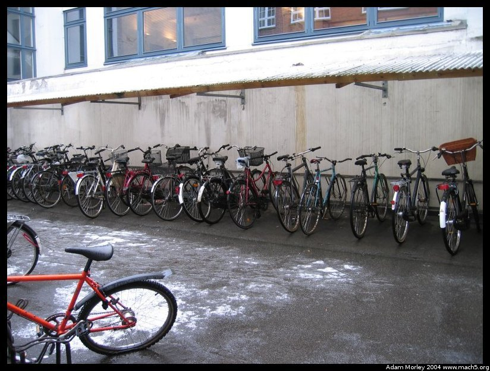
Many people say Denmark has the cleanest public transit in the world. That is mostly true. There is very little trash, the trains and busses are clean and tidy, and there is little in the way of vandalism. But even the Danes use the space between the platform and the tracks as a trash can sometimes.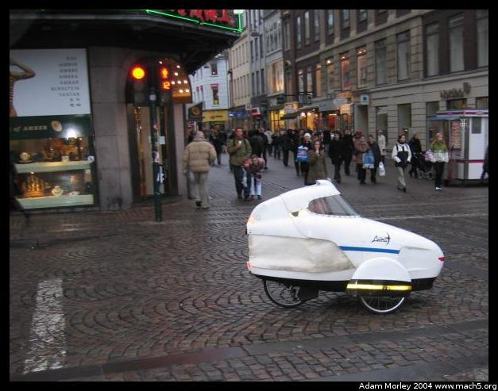
One day, while walking down Strøget, I happend upon this odd little contraption that looked something like a bike and a motorcycle sidecar. This should look like a strange device to you. It looked like a strange device to the Danes too --- they all turned and stared. Many even changed their normally stoic expressions!Recently, the Copenhagen area implemented a new method of public transit -- a metro. Currently, they have regional trains, inter-city trains, commuter trains, busses and now a metro. Yes, that's *five* separate methods of public transit, many of which overlap. All have a unique purpose: commuter trains for suburbs and normal commuters, inter-city trains for point to point travel, regional trains for transit around Denmark and to Sweden, the metro for shorter distance, often running routes, and busses to circulate people after they get off tier one transit.
This new metro, however, was not without problems. Designed by an Italian company, and running American software, it was the first of its kind. I am told it didn't work properally in the beginning. It would get "stuck," the doors wouldn't open, etc. There is no driver -- this metro is fully computer controlled. People still say it breaks once a day (or more or less depending on whom you ask), but people do ride it, and I've managed to ride it six times with no problems. We'll see how it goes over time.
Update: I rode the metro a lot. It's fun to sit in the front and see where you're going. It only broke a few times on me, and usually only momentarily. Once, though, it got really borked (borked is broken, but really broken, less that totally messed up though). It stopped on the tracks, and we just sat there. An announcement came over the intercom, and the control team said something about waiting an eyeblink. Then the train rebooted. I'm not kidding. The HVAC, lights, power, etc. all turned off, paused, and turn back on. I could see diagnostic messages on the LED displays. This happend four times. And then (~10 minutes later) we were on our way again. Quite sketch.
The benefit is that in rush hours, the trains come every four to six minutes, which means even if your bus is late, you can catch the next train. And most busses are coordinated to arrive at metro stations just before it pulls into the station, whereas with regional trains they are not. So its effective for shortening travel times.
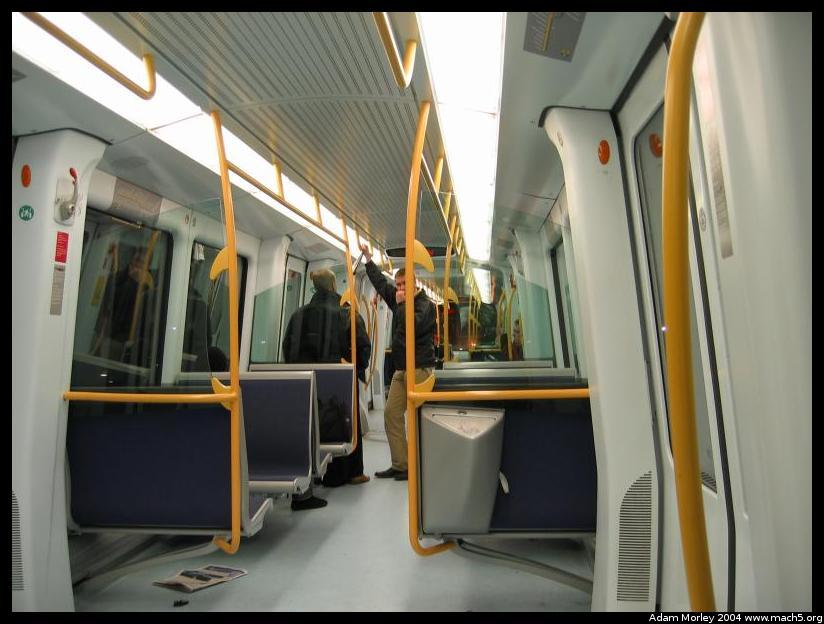
The inside of the new metro, at night. Not nearly as many people riding at night as there are during the day.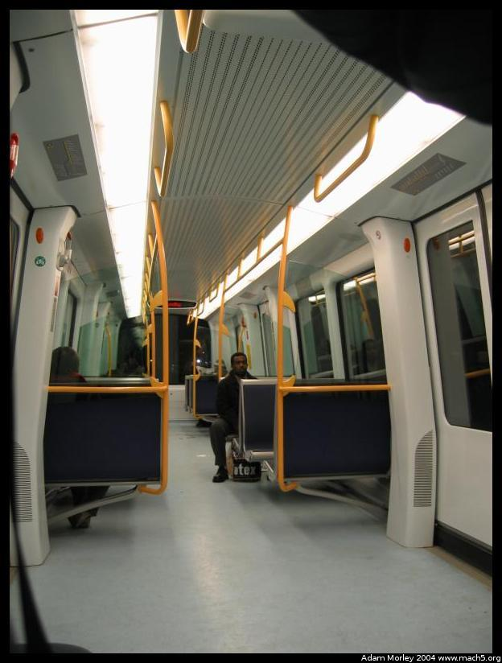
Another picture of the inside of the metro. The route is just barely visible on the top.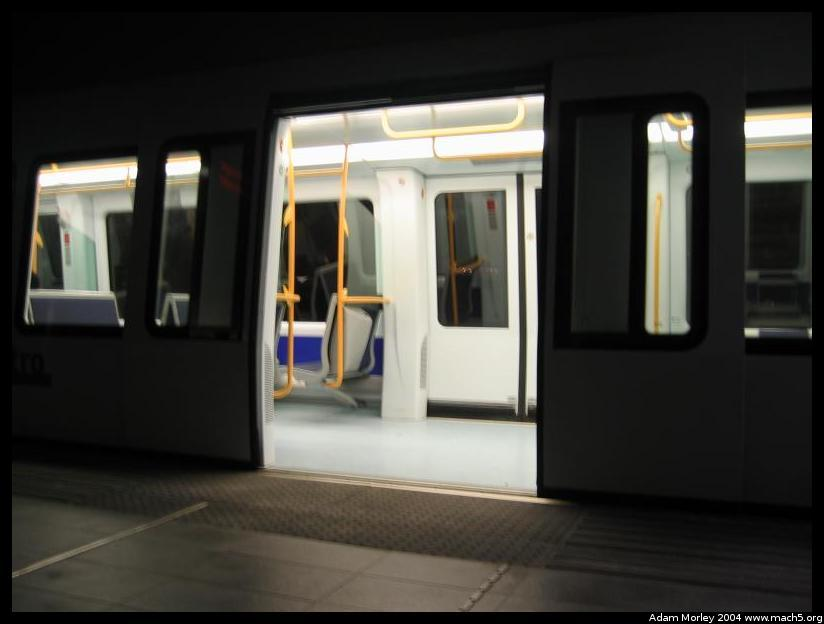
The metro didn't break! And the doors opened! Apparently, when the metro was first introduced it would break in a specific way -- the doors wouldn't open. Oops. I've ridden it about 6 times with no problems. For me (at least so far) its been efficient, quick and more frequent than the regional train which means I can wake up later!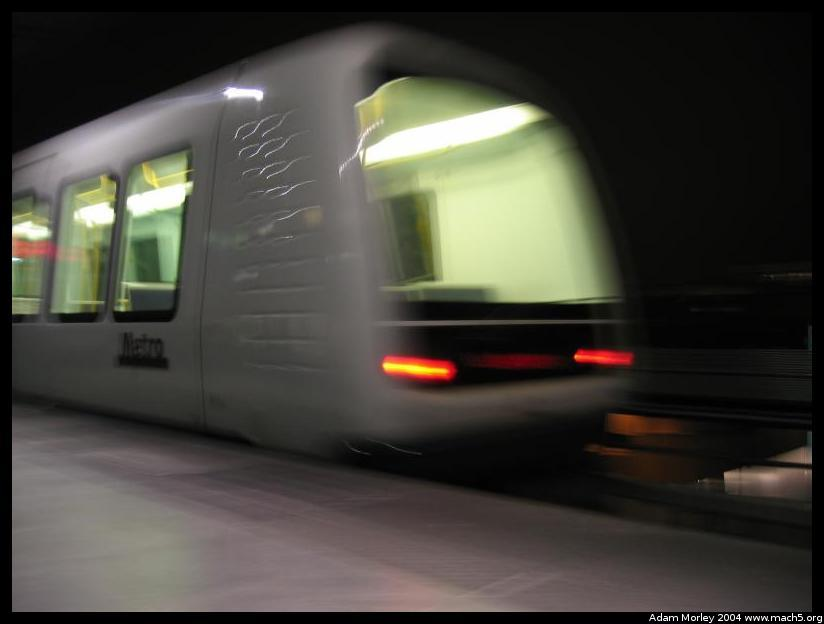
Taken on a trash can with a 2s self-timer and manual panning with long shutter turned on. The Metro: so fast, so sleek, so computer controlled.This is a downtown parking lot.
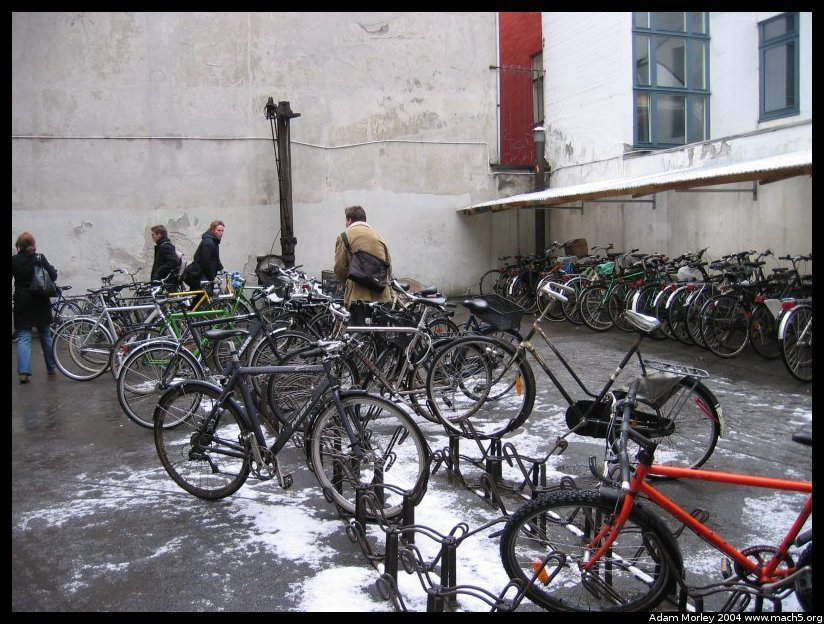
It's mainly for students, but it's quite common to ride a bike to work or school. The bikelanes are wide, the cars are small, the streets less scary on a bike than many other cities I've been in (in fact, all of them). There are even free bikes (city bikes) in the summertime, which you can use for a 20 DKK deposit which you get back when done.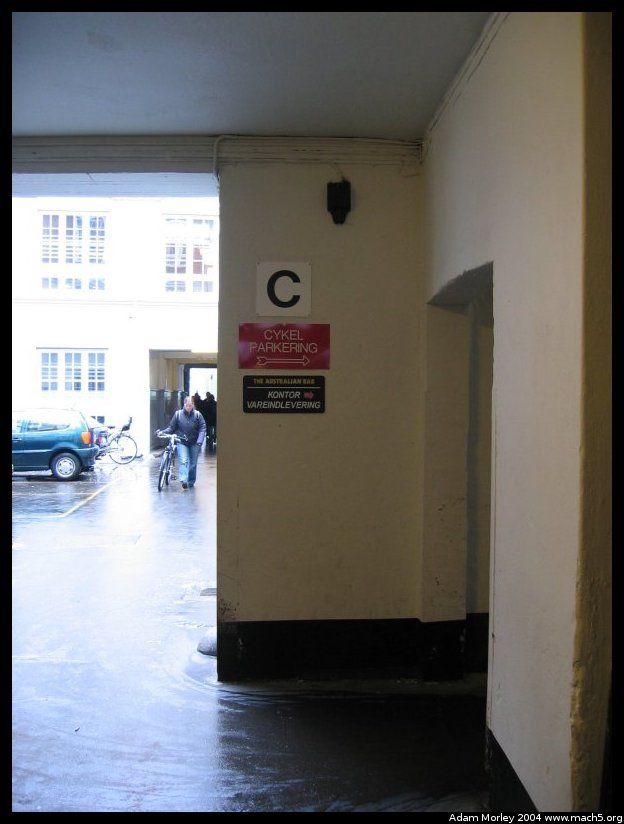
Bicycle parking. I will never forget the time I saw an absolutely stunning young lady on a bike talking on her cell phone waiting for a light to change, holding a sausage.Adam can be reached at adam dot morley at gmail dot com